MR-MCXN-T1 Hardware Architecture and Reference Design¶
The MR-MCXN-T1 is a compact, open hardware reference design for distributed sensing, connectivity, and edge processing in mobile robotics systems. It is based on the cost-effective NXP MCXN947 microcontroller and is intended to act as an intelligent 100BASE-T1 Ethernet sensor and actuator node. This application note describes the system architecture, board functions, electrical interfaces, connectors, power distribution, and hardware integration considerations for hardware engineers integrating the MR-MCXN-T1 into a robotics system.
This document covers the MR-MCXN-T1 Hub and the following add-on boards:
MR-MCXN-T1 Hub: main hub board for the MR-MCXN-T1 system
MR-MCXN-T1-IO: input/output shield with Dronecode standard connectors
MR-MCXN-T1-F9P: GPS/GNSS shield with RTK capability
MR-MCXN-T1-OFL: optical-flow shield with distance sensor and optical-flow measurement
This document is hardware focused. Software is referenced only where needed to explain the intended use of a hardware function. Detailed software installation, configuration, APIs, middleware, and application development are covered in the MR-MCXN-T1 User Manual and the NXP Robotic Platforms SDK documentation.
1. Introduction¶
1.1 The MR-MCXN-T1 Hub¶
The MR-MCXN-T1 node board, also referred to as the MR-MCXN-T1 Hub, is based on the cost-effective MCXN947 microcontroller and is intended to act as an intelligent 100BASE-T1 Ethernet sensor and actuator node. Supported example shield designs demonstrate several input/output use cases.
The design demonstrates the convenience of a single-connector sensor node that carries both raw battery power and two-wire 100BASE-T1 Ethernet to a compact edge device. This approach simplifies distributed sensor placement on a robot by reducing wiring, keeping local processing close to the sensor, and sending data to a flight controller, companion computer, or ROS 2 system over Ethernet.
The design intent is to provide a seamless Ethernet-connected node for roboticists using ROS 2. In this sense, the hardware can be considered the physical embodiment of a ROS 2 node.
The key value of the design is the combination of the low-cost MCXN microcontroller, the 100BASE-T1 Ethernet interface, the wide-input-range power stage supporting typical robotics battery voltages up to 60 V, and the off-board connection to a sensor or actuator through an add-on board.
A typical product implementation would likely flatten the Hub and add-on board into the smallest practical single-board solution. The additional interfaces provided on the Hub are intended primarily for evaluation and experimentation, as they can be included with minimal additional design overhead. A standalone Ethernet-to-CAN gateway is the only identified production-oriented exception.
1.2 System design objectives¶
Provide an example of offloading hard real-time ROS 2 nodes to a low-cost MCU implementation for distributed robotic sensing and actuation.
Combine direct battery power and two-wire 100BASE-T1 Ethernet in a streamlined node connection.
Provide an efficient, ROS 2 developer-friendly Zephyr, ZROS, and Zenoh framework for hard real-time ROS 2 nodes, enabling developers to focus on sensor or actuator drivers while reusing the underlying RTOS and transport mechanisms.
Act as the physical embodiment of a ROS 2 node.
2. System hardware architecture¶
2.1 System overview¶
The MR-MCXN-T1 family consists of the Hub board and application-specific add-on boards. The Hub provides processing, Ethernet connectivity, power handling, and the common expansion interface. Each add-on board places a specific sensor or input/output function close to the MCXN947-based node.
2.2 Functional partitioning¶
Hub board: provides the core processing, 100BASE-T1 connectivity, power distribution, debugging, and shield interface. Several additional interfaces were included for evaluation convenience because they could be implemented with minimal design overhead; however, they are generally superfluous to the intended node function and would normally be omitted from an optimized production design.
IO board: an example actuator and general-purpose I/O shield that transforms the T1 node into an I/O interface using common robotics connectors; a production implementation would typically integrate the shield and Hub into an optimized single-board node.
F9P board: an example GNSS sensor shield with RTK capability that transforms the T1 node into a precision-positioning node; a production implementation would typically integrate the shield and Hub into an optimized single-board node.
OFL board: an example optical-flow and distance-sensor shield that transforms the T1 node into a local motion-sensing node; a production implementation would typically integrate the shield and Hub into an optimized single-board node.
2.3 Single-connector node concept¶
The node architecture reduces robot wiring by carrying raw battery power and two-wire 100BASE-T1 Ethernet to the local node on a single 4-pin connector. Power over Data Line (PoDL) was evaluated but rejected because power negotiation would add unnecessary complexity. In robotics systems, power distribution is typically managed by the system architect; a direct battery input therefore provides greater flexibility, higher current capability, and simpler circuitry. The resulting Power Adjacent to Ethernet (PAE) connection carries power and Ethernet through a rugged, latching four-pin connector. The Hub provides the local processing and interfaces required by the attached add-on board.
2.4 Hardware boundaries¶
Electrical limits, connector pin assignments, signal direction, power-domain relationships, and assembly options must be confirmed against the released schematic and bill of materials for the applicable board revision. This document provides a system-level hardware overview and should be used with the associated design files. The reference design demonstrates an implementation of the software framework, and its schematics may serve as a starting point; however, the hardware is expected to be adapted to the specific electrical requirements of the target application.
3. MR-MCXN-T1 Hub hardware¶
3.1 Hardware overview¶
The MR-MCXN-T1 Hub is the central board in the product family. Its MCXN947 microcontroller performs local processing and manages the interfaces used by the Hub and attached add-on board. The Hub is intended to operate as a network-connected sensor or actuator node rather than as a standalone robot controller.

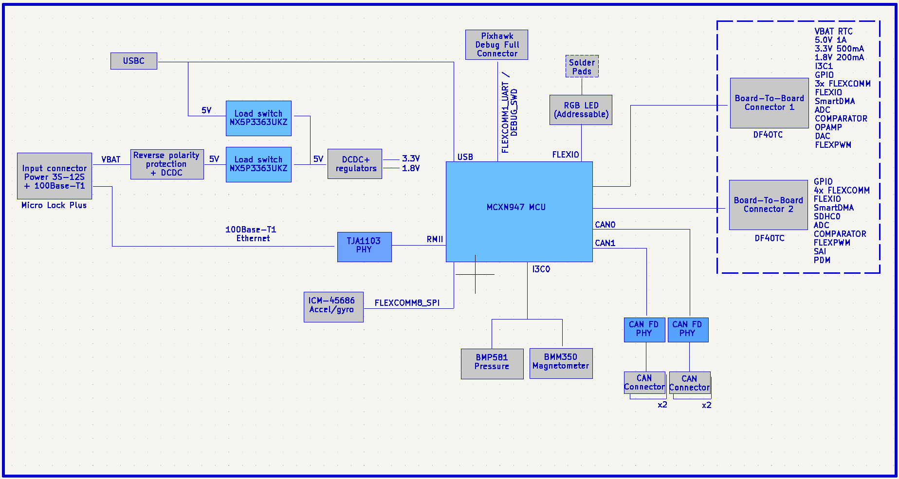
Figure 1. MR-MCXN-T1 Hub block diagram
3.2 Processing subsystem¶
The processing subsystem is based on the NXP MCXN947 microcontroller. The Hub also includes an ICM-45686 accelerometer and gyroscope, a BMP581 pressure sensor, and a BMM350 magnetometer for evaluation and development. The selected MCU interfaces and pin assignments depend on the applicable board revision and Zephyr hardware configuration and should be confirmed against the released schematic and overlay files.
3.3 100BASE-T1 Ethernet interface¶
The Hub uses an NXP TJA1103 100BASE-T1 Ethernet PHY connected to the MCXN947 through RMII. The two-wire Ethernet pair is routed through the PAE connector together with the separate battery-power conductors. The physical interface, connector implementation, termination, and protection components form part of the hardware design and should be retained when the design is adapted.
The 100BASE-T1 PHY schematic follows standard design practice. More detail can be found in the datasheet and application notes specific to the TJA1103. A common passive network configuration is used to provide filtering and ESD protection.

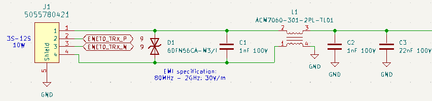

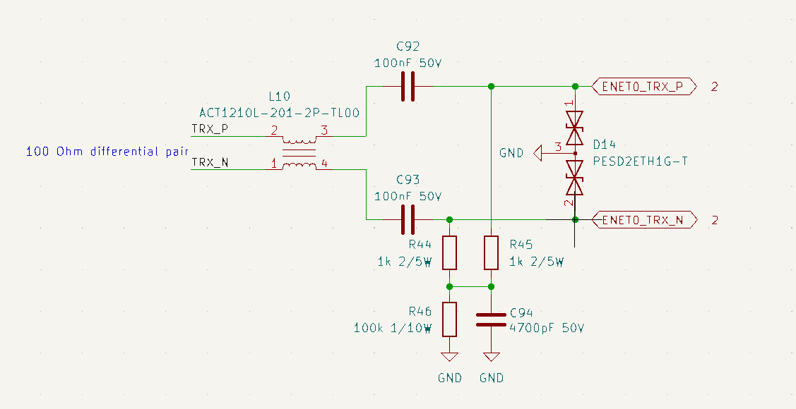
Figure 2. 100BASE-T1 simple passive filtering and ESD interface
The 100BASE-T1 Ethernet TJA1103 PHY drives two configurable status LEDs: D13 (green), typically used to indicate an established 100BASE-T1 link, and D12 (amber), typically used to indicate transmit and receive activity. The precise behavior is determined by the TJA1103 LED-output register configuration in software.
Reference |
Color |
Indication |
|---|---|---|
D13 |
Green |
Ethernet link status — illuminated when the 100BASE-T1 link is established. |
D12 |
Amber |
Ethernet activity — flashes when Ethernet frames are transmitted or received. |
3.4 Power input and distribution¶
The Hub accepts a 3S-to-12S battery input, up to 60 V, through the PAE node connection and includes reverse-polarity protection. Onboard conversion provides the local rails required by the Hub and attached shield. The verified shield supplies are:
5 V at up to 1 A
3.3 V at up to 500 mA
1.8 V at up to 200 mA
The following table describes the power-supply status indicators.
Reference |
Schematic name |
Color |
Function |
|---|---|---|---|
D2 |
USB VBUS |
Blue |
Indicates that the protected 5 V VBUS supply is present. The LED turns off if the associated load switch reports a fault condition. |
D3 |
5V-IND |
Blue |
Indicates that the 5 V supply rail regulated from the power connector battery input is present. The LED turns off if the associated load switch reports a fault condition. |
D4 |
3V3-IND |
Blue |
Indicates that the 3.3 V supply rail is present. |
D5 |
1V8-IND |
Blue |
Indicates that the 1.8 V supply rail is present. |
Input limits, protection behavior, regulator ratings, available shield current, and sequencing requirements must be confirmed against the released schematic for the board revision in use.

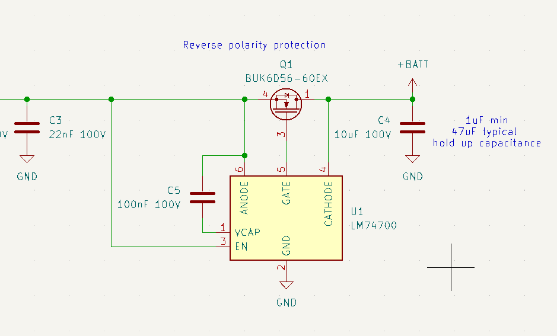
Figure 3. Primary wide-input-voltage regulator
3.5 Add-on shield board-to-board interface¶
A key focus of this design is to demonstrate the base 100BASE-T1 plus power functionality and then make provisions for easily prototyped additional small shield boards. This shield interface is provided through two DF40TC board-to-board connectors that supply shield power and configurable MCXN947 signals.
The interface can expose FlexComm, I3C, GPIO, SDIO/SDHC, FlexIO, SmartDMA, ADC, comparator, operational-amplifier, DAC, FlexPWM, SAI, and PDM functions. Peripheral pin multiplexing and signal mapping are not fixed solely by the hardware; they depend on the active Zephyr configuration and are defined through Zephyr shield definitions and hardware overlays.
Before attaching an add-on board, verify the applicable shield and overlay configuration together with connector orientation, pin assignment, voltage domain, current demand, and any mutually exclusive functions.
Note: Do not interchange shields between Hubs without first confirming the active pin mapping, as configured assignments may not match the connected board.

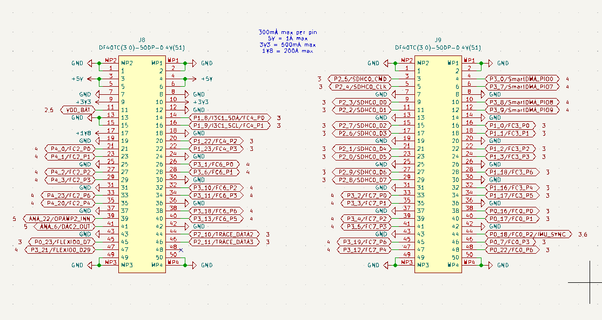
Figure 4. DF40 board-to-board interfaces
3.6 Programming and debug¶
The Hub provides a programming and debug connector for the MCXN947 that follows the Dronecode/Pixhawk standard Debug Full interface. Use a compatible debug probe and the cable or adapter specified for this connector and pinout.

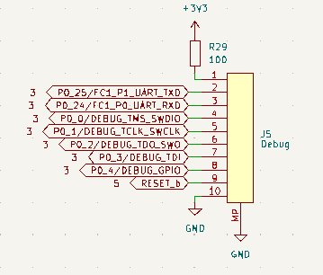
Figure 5. Standard Dronecode/Pixhawk Debug Full interface
3.7 Additional interfaces, indicators, test points, and configuration options¶
The T1 Hub centers on the combined 100BASE-T1 Ethernet and power interface, the MCU, the board-to-board peripheral connections, and the Zephyr-based software framework that enables operation as a ROS 2 node. The processor also provides several auxiliary interfaces that, although not central to the design, are exposed for evaluation and experimentation.
Addressable RGB status LED¶
U14 is an SK9822, APA102-compatible, individually addressable RGB LED that may be used to provide software-controlled visual status indication. It uses a synchronous, SPI-like serial interface with separate data and clock signals, allowing the MCU to set the LED color and brightness. Solder pads expose the LED power, ground, data, and clock connections so that additional SK9822-compatible LEDs can be daisy-chained into an external string as required.

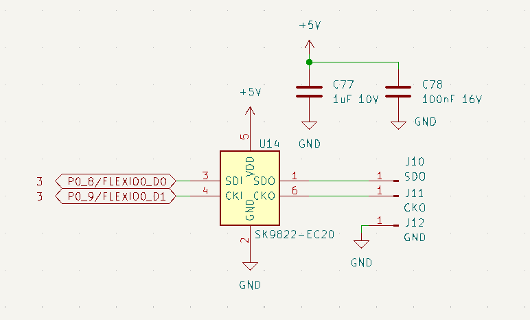
Figure 6. SK9822 APA102-compatible addressable RGB LED
USB 2.0 through a USB-C connector¶
This interface is available on the MCXN947 and is configured normally per the datasheet guidelines with ESD protection. Zephyr software typically configures this as a console UART.

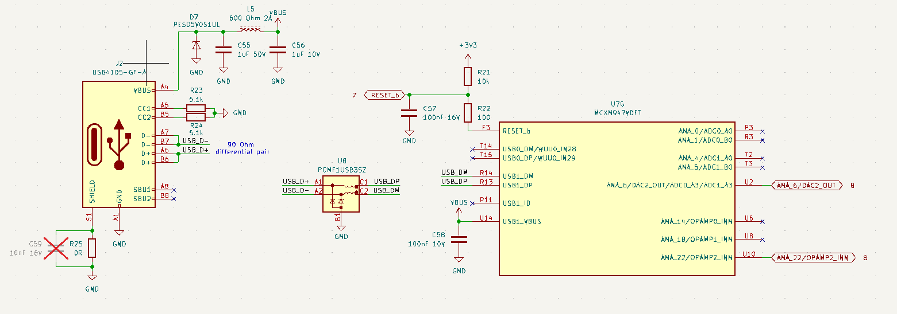
Figure 7. USB 2.0 using a USB-C connector
CAN-FD / CAN-SIC interfaces¶
Two independent CAN FD interfaces (CAN0, CAN1) use TJA1462 transceivers with CAN Signal Improvement Capability (CAN SIC). Each interface includes the recommended ESD protection and filtering network. Each bus provides two parallel connectors for pass-through connections (CAN0A, CAN0B and CAN1A, CAN1B). Bus-termination resistor footprints are provided but intentionally left unpopulated. A practical evaluation use case is the Hub as an Ethernet-to-CAN gateway.

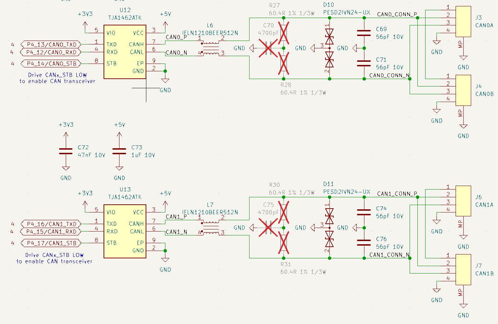
Figure 8. CAN0 and CAN1 buses with dual connectors
Onboard sensors¶
The Hub includes three onboard motion and environmental sensors for experimentation.
The BMM350 and BMP581 are currently disabled in software so that their shared pins can provide a dedicated UART console that captures Zephyr logs from the start of boot. To make these pins available to the sensors, the Zephyr console can instead be routed through USB CDC. I3C is the preferred interface for the BMM350 and BMP581 and is expected to be enabled once the upstream Zephyr drivers are stable. The ICM-45686 uses a separate SPI interface and is not affected by this pin-multiplexing constraint.
ICM-45686: a six-axis inertial measurement unit combining a three-axis accelerometer and three-axis gyroscope for measuring linear acceleration and angular motion.
BMM350: a three-axis magnetometer for measuring magnetic-field direction and supporting heading estimation.
BMP581: a barometric pressure sensor for measuring atmospheric pressure and supporting altitude estimation.

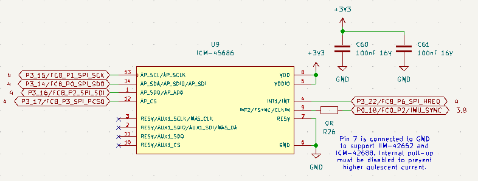
Figure 9. ICM-45686 IMU on SPI

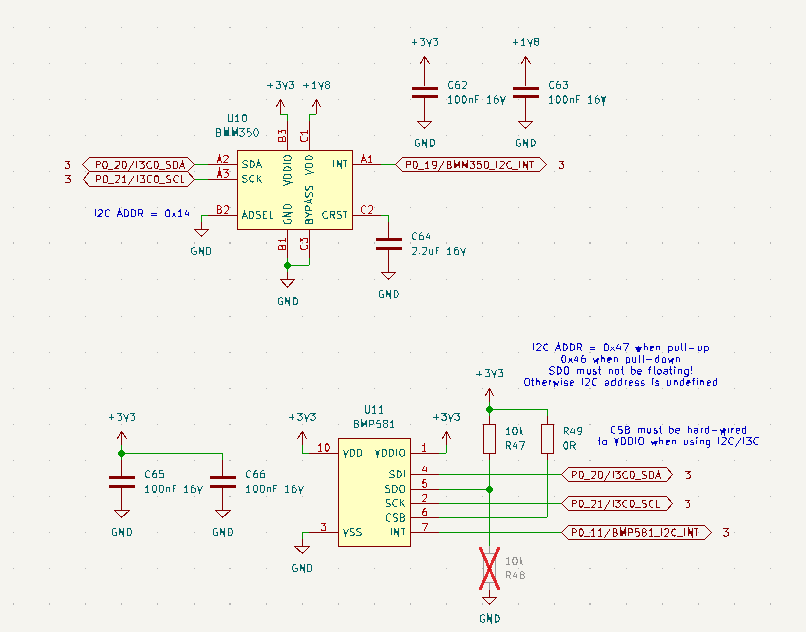
Figure 10. BMM350 and BMP581 I3C sensors
Schematic and design-file verification¶
The available schematic-derived information does not identify a complete, verified set of test-point reference designators; therefore, test points, straps, and assembly options must be confirmed directly from the released schematic and board drawing for the applicable revision.
4. MR-MCXN-T1-IO hardware¶
4.1 Overview¶
The MR-MCXN-T1-IO is an input/output shield for the MR-MCXN-T1 Hub. It provides access to node signals through Dronecode standard connectors for robotics integration.

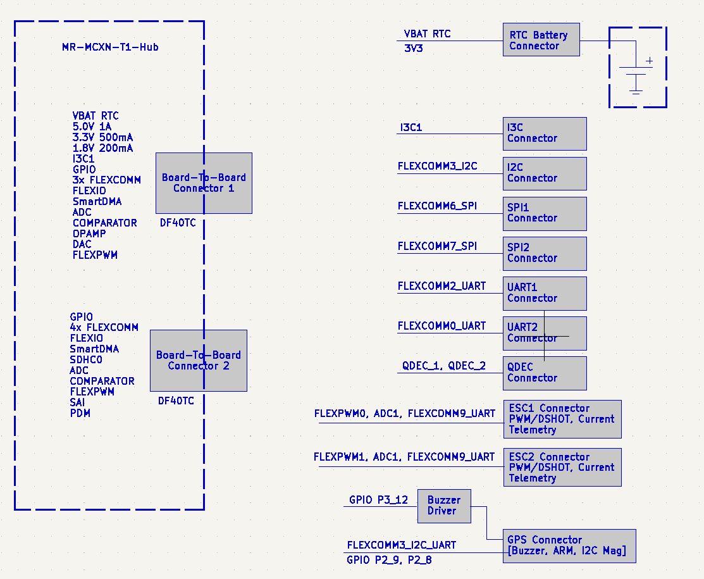
Figure 11. MR-MCXN-T1-IO shield block diagram
4.2 Connector interfaces¶
The connector set, pin assignments, voltage levels, and signal directions must be verified against the MR-MCXN-T1-IO schematic. External equipment must not be connected until power, ground, and logic compatibility have been confirmed.
4.3 Input/output functions¶
The IO shield demonstrates typical sensor and actuator connectivity through Dronecode-style interfaces. Verified functions include I3C, I²C, two SPI interfaces, two UART interfaces, a quadrature-decoder input, two ESC interfaces supporting PWM or DShot control with current telemetry, an RTC battery connection, a buzzer, and a Pixhawk-style GPS connection. Exact signal mapping, power rails, and mutually exclusive functions are defined by the schematic and the active Zephyr shield overlay.
4.4 Power and protection considerations¶
Confirm the current available on each connector, the source of each power rail, and any onboard protection before powering attached devices. The combined load of all connected peripherals must remain within the Hub and shield limits.
4.5 Integration checklist¶
Confirm the Hub and IO board revisions.
Verify connector orientation and pinout.
Verify the peripheral voltage and current requirements.
Check whether any signals are shared or mutually exclusive.
Connect or disconnect peripherals only under conditions allowed by the hardware design.
5. MR-MCXN-T1-F9P hardware¶
5.1 Overview¶
The MR-MCXN-T1-F9P is a GPS/GNSS add-on board with RTK capability. It allows the MR-MCXN-T1 node to acquire positioning data locally and deliver it to the robotic system through the Hub Ethernet connection.

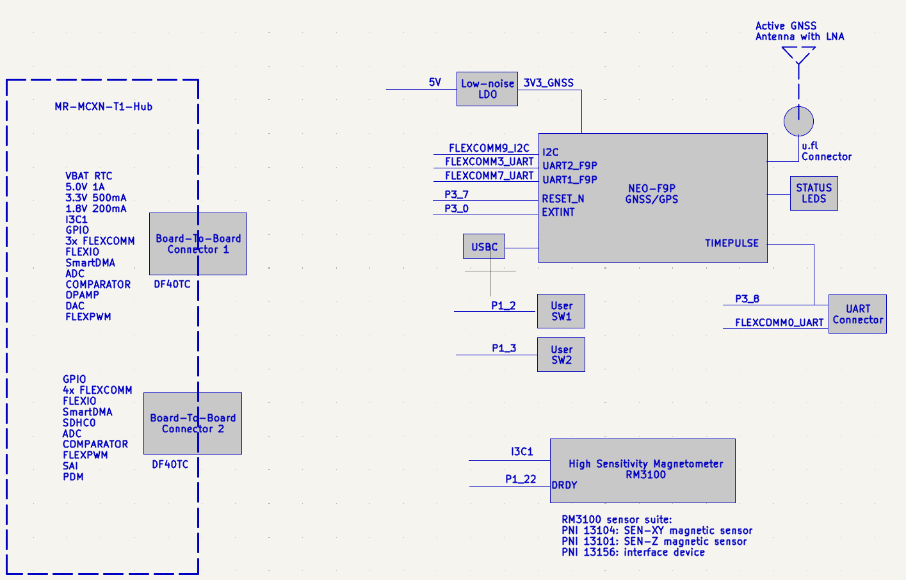
Figure 12. MR-MCXN-T1-F9P shield block diagram
5.2 GNSS receiver subsystem¶
The shield uses a u-blox NEO-F9P-15B GNSS receiver. It provides two UART interfaces as well as a direct USB-C interface to the receiver. Supporting hardware includes a UART connection for an external RTK correction radio and control or status signals for TIMEPULSE, RESET, EXTINT, and SAFEBOOT. A high-sensitivity RM3100 magnetometer is also included on the shield.
A dedicated low-noise LDO powers the NEO-F9P as a precaution, although it may be unnecessary in a production design.
5.3 Antenna interface¶
The GNSS antenna connects through a u.FL interface intended for a compatible active antenna. The preferred tested antenna is the TE Connectivity (Tyco) ANT-GNCP-C25L125100 active GNSS antenna. Other compatible antennas may be used; however, electrical compatibility and all required performance and system-level validation must be verified for the chosen antenna.
5.4 RTK correction-data path¶
The NEO-F9P supports correction-data delivery through UART, USB, SPI, and I²C interfaces. The MR-MCXN-T1-F9P shield routes both receiver UARTs and I²C to the Hub, provides USB-C access for direct configuration, and includes a dedicated UART connector for an external correction radio. These hardware paths allow correction data to be supplied through several possible system architectures.
The current software defaults to a multiplexed UART configuration that carries GNSS data, receiver configuration, and RTK corrections over a single connection. See the separate software documentation for supported configurations and operating modes.
5.5 Timing and communication interfaces¶
The following table lists the verified NEO-F9P interface connections. These connections reflect the schematic routing; the active Zephyr shield overlay determines the peripheral multiplexing and software configuration.
Function |
Verified connection |
|---|---|
NEO-F9P I²C |
FLEXCOMM9 |
NEO-F9P UART2 |
FLEXCOMM3 UART |
NEO-F9P UART1 |
FLEXCOMM7 UART |
External correction-radio connector |
J3, using FLEXCOMM0 UART TX/RX |
Optional correction-radio timing signal |
TIMEPULSE on J3 |
Receiver reset |
RESET_N — P3_7 |
External interrupt |
EXTINT — P3_0 |
Receiver timing output |
TIMEPULSE — P3_8 |
Safe-boot control |
SAFEBOOT_N — SW1 / P1_2 |
Additional user switch |
SW2 — P1_3 |
Magnetometer interface |
I3C1 / I²C, with DRDY |
Power indicator |
D4 — POWER |
RTK-status indicator |
D5 — RTK_STAT |
Timing indicator |
D7 — TIMEPULSE |
The shield status indicators are:
Reference |
Name |
Color |
Function |
|---|---|---|---|
D4 |
POWER |
Blue |
Indicates that board power is present. |
D5 |
RTK_STAT |
Red |
Indicates the NEO-F9P RTK status output. |
D6 |
GPS-FIX |
Yellow |
MCU-controlled indicator that illuminates when the software obtains a GPS fix. |
D7 |
TIMEPULSE |
Yellow |
Indicates activity on the NEO-F9P TIMEPULSE output. |
5.6 Installation considerations¶
Mount the antenna with a suitable view of the sky.
Keep the antenna and cable away from strong interference sources.
Verify the antenna connection before applying power.
Confirm that the antenna is electrically compatible with the F9P shield, including its supply-voltage and current requirements.
6. MR-MCXN-T1-OFL hardware¶
6.1 Overview¶
The MR-MCXN-T1-OFL is an optical-flow add-on board that combines optical-flow measurement with distance sensing. The board is intended to provide local motion-related measurements to the MR-MCXN-T1 Hub.

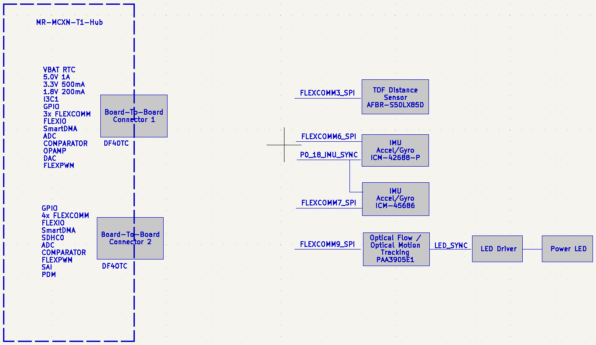
Figure 13. MR-MCXN-T1-OFL shield block diagram
6.2 Optical-flow subsystem¶
The optical-flow subsystem uses a PAA3905E1 sensor with a dedicated illumination LED driver and high-power LED. It communicates with the Hub through a configured FlexComm/SPI path. Optical performance depends on target texture, lighting, working distance, mounting, and motion conditions.
Note: Alternative illumination sources may be used, including infrared LEDs such as the ams OSRAM SFH 4775S. A 940 nm LED can reduce optical interference with the AFBR distance sensor.
6.3 Distance-sensor subsystem¶
Distance measurement is provided by an AFBR-S50LX85D time-of-flight sensor. Its field of view, operating limits, optical clearance, interface, and power requirements must be considered when integrating the board.
6.4 Inertial measurement units¶
The board includes two six-axis inertial measurement units for motion sensing and evaluation:
ICM-42688-P: a three-axis accelerometer and three-axis gyroscope that provides angular-rate and linear-acceleration measurements.
ICM-45686: a newer three-axis accelerometer and three-axis gyroscope available as an alternative IMU for evaluation and software development.
Both devices are available to the MCXN947 through configured FlexComm/SPI paths. The active Zephyr shield overlay determines the selected interface, chip-select routing, interrupt signals, and software enablement.
6.5 Mechanical placement¶
Mount the board so that the optical path is unobstructed and the sensing direction matches the intended application. Avoid covers, fasteners, wiring, or structural parts within the sensor fields of view.
6.6 Environmental considerations¶
Surface reflectivity, texture, ambient light, contamination, vibration, and mounting height can affect measurements. Validate the installed configuration under the expected operating conditions.
6.7 Electrical integration¶
The shield includes ICM-42688-P and ICM-45686 inertial sensors, provisions for IMU synchronization, and configured FlexComm/SPI communication paths for the optical-flow, distance, and inertial devices. Verify shield orientation, power rails, chip-select routing, synchronization signals, reset or interrupt lines, and the active Zephyr overlay against the released schematic before operation.
7. Software context¶
This section provides only the software context needed to understand the intended hardware role. Software installation, build procedures, configuration, APIs, middleware, examples, and troubleshooting are outside the scope of this hardware application note; see the MR-MCXN-T1 User Manual.
The software enablement framework uses Zephyr on the MCU and separates local driver work from ROS-oriented data exchange. It provides a path for sensor and actuator data to move between the MR-MCXN-T1 node and a ROS 2-based host system over 100BASE-T1 Ethernet.
ZROS is an open-source library that provides a ROS-oriented topic layer on the MCU. It supports preparing, formatting, inspecting, and exchanging sensor or actuator data in a manner similar to ROS 2 topics on a Linux host and includes an efficient zero-copy buffer mechanism.
ZROS uses FlatBuffers internally for efficient MCU-side data handling. For ROS 2 interoperability, data can be statically packed into the CDR representation generated from ROS 2 IDL definitions. Zenoh-pico provides the transport and routing layer used to move data between the MCU node and the rest of the robotics system.
The NXP Robotic Platforms SDK provides a curated and validated set of software components, tools, and documentation tested together on this hardware platform. NXP contributes improvements and fixes to upstream projects on a scheduled basis, so the latest upstream code may differ from the version included in an SDK release.
8. Hardware installation and bring-up¶
8.1 Before applying power¶
Confirm the Hub and add-on board part numbers and revisions.
Inspect both boards for damage, contamination, or misplaced components.
Verify connector orientation and mating.
Confirm the input supply range and polarity from the applicable schematic.
Confirm the expected current demand of the Hub and attached peripherals.
Connect antennas or optical assemblies required by the selected add-on board.
8.2 Initial power-on checks¶
Use a current-limited supply where appropriate. Check for abnormal current, unexpected heating, and the expected local power rails before connecting the node to the wider robotic system.
8.3 Ethernet connection¶
Connect the 100BASE-T1 interface using the intended cable and mating hardware. Verify the physical link before proceeding to software-level communication checks. Although 100BASE-T1 connections are polarity-sensitive, many PHYs can correct reversed polarity automatically or under software control.
8.4 Peripheral verification¶
Verify the attached add-on board one functional block at a time. Hardware verification should establish correct power, connectivity, signal levels, and basic device presence before application-level testing.
8.5 Handling and integration¶
Use appropriate electrostatic-discharge precautions. Do not hot-plug interfaces unless the applicable board documentation explicitly permits it. Provide mechanical support and strain relief appropriate to the installation.
9. Conclusion¶
The MR-MCXN-T1 family provides a compact hardware approach for distributed sensing, connectivity, and edge processing in mobile robotics, and specifically acts as an efficient physical embodiment of a ROS 2 node. The MCXN947-based Hub combines local processing with two-wire 100BASE-T1 Ethernet, while the IO, F9P, and OFL add-on boards demonstrate common robotics input/output, positioning, and motion-sensing functions.
Hardware integration should always be checked against the released schematic, bill of materials, and board-revision documentation. Detailed software enablement is intentionally covered in a separate document.
10. Abbreviations¶
Acronym |
Description |
|---|---|
ADC |
Analog-to-digital converter |
CAN |
Controller Area Network |
CAN FD |
Controller Area Network Flexible Data-rate |
CAN SIC |
Controller Area Network Signal Improvement Capability |
CDR |
Common Data Representation |
DAC |
Digital-to-analog converter |
ESD |
Electrostatic discharge |
FBS |
FlatBuffers schema |
GNSS |
Global Navigation Satellite System |
GPIO |
General-purpose input/output |
GPS |
Global Positioning System |
I²C |
Inter-Integrated Circuit |
I3C |
Improved Inter-Integrated Circuit |
IDL |
Interface Definition Language |
IMU |
Inertial measurement unit |
IO |
Input/output |
LDO |
Low-dropout regulator |
LED |
Light-emitting diode |
MCU |
Microcontroller unit |
OFL |
Optical flow |
PAE |
Power Adjacent to Ethernet |
PDM |
Pulse-density modulation |
PHY |
Physical-layer transceiver |
PoDL |
Power over Data Line |
PWM |
Pulse-width modulation |
RMII |
Reduced Media-Independent Interface |
ROS 2 |
Robot Operating System 2 |
RTC |
Real-time clock |
RTK |
Real-Time Kinematic |
RTOS |
Real-time operating system |
SAI |
Serial audio interface |
SDHC |
Secure Digital High Capacity |
SDIO |
Secure Digital Input Output |
SDK |
Software development kit |
SPI |
Serial Peripheral Interface |
UART |
Universal asynchronous receiver-transmitter |
USB |
Universal Serial Bus |
USB CDC |
USB Communications Device Class |
VBUS |
USB bus-supply voltage |